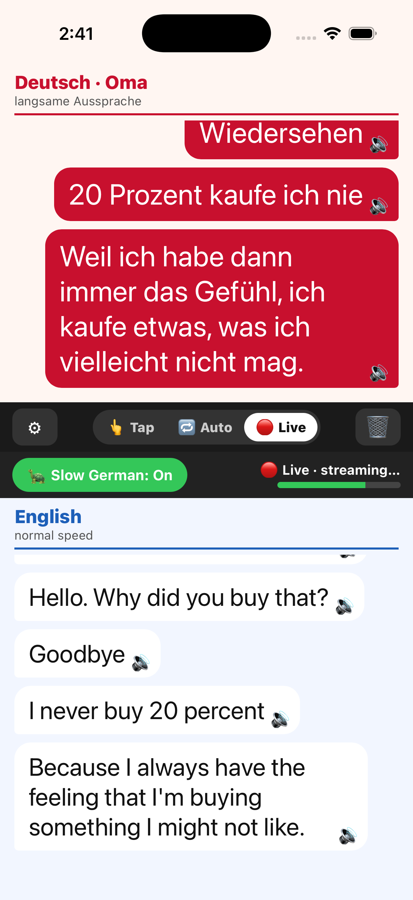

Why it’s different
Most translators flatten dialect into mush. This one is tuned for how people actually speak in Bavaria.
Understands Bavarian
Tuned to interpret Boarisch — Servus, fei, gell, a bissl, dahoam, Brotzeit, Pfiat di — and tags each line when dialect is detected.
Slow German for Oma
Spoken translations can be slowed right down (¼, ⅓, or ⅗ speed) so an elderly listener can follow every word.
Three ways to talk
Tap a mic per turn, go hands-free (it detects who’s speaking), or stream translations live as you speak.
Choose your engine
Google Gemini, Groq, or Mistral — each with a quality score. If one hits its daily limit, it switches automatically and keeps going.
Private by design
No account, no ads, no tracking. Your API keys and settings never leave your device.
Hear it aloud
Translations are spoken automatically, and you can tap any line to replay it — handy across a noisy table.
How a conversation flows
The screen is split: Deutsch · Oma on top, English below. Everything appears in both languages at once.

Questions?
The Support page covers setup, the three modes, and troubleshooting. Read how your data is handled in the Privacy Policy.